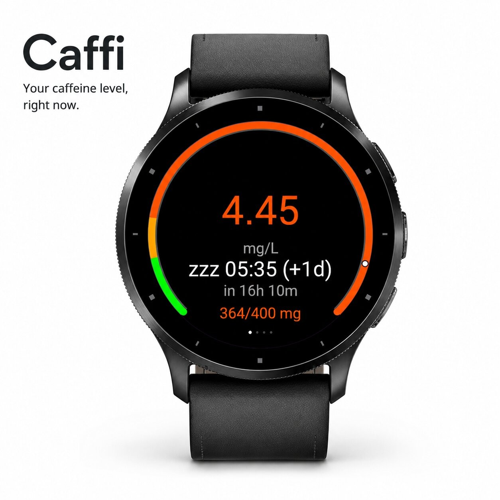
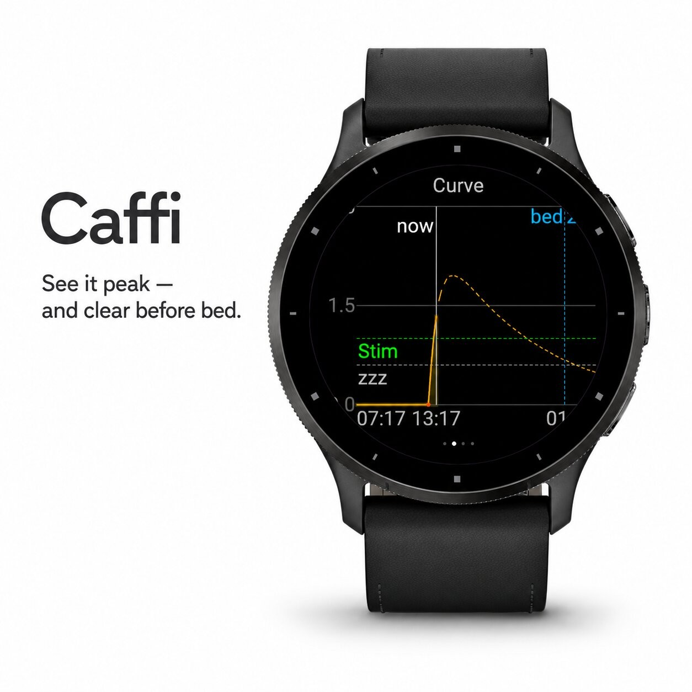
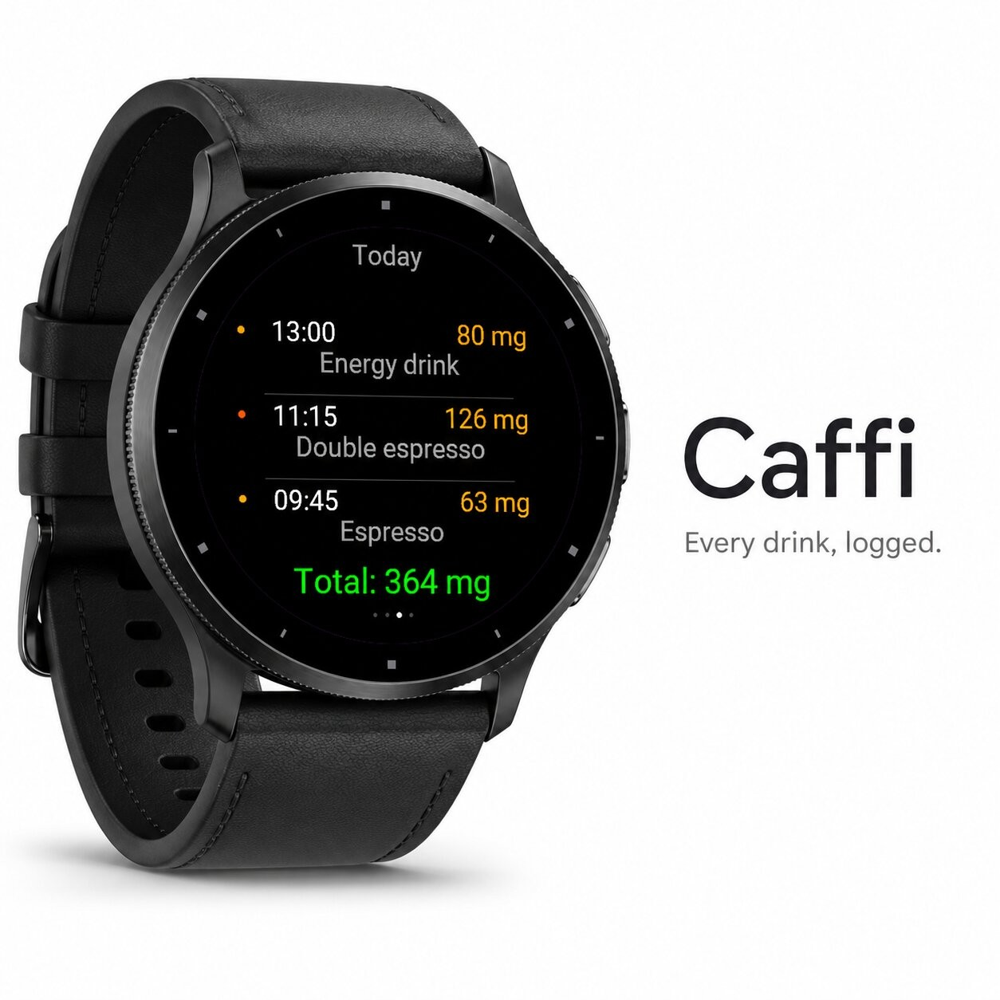
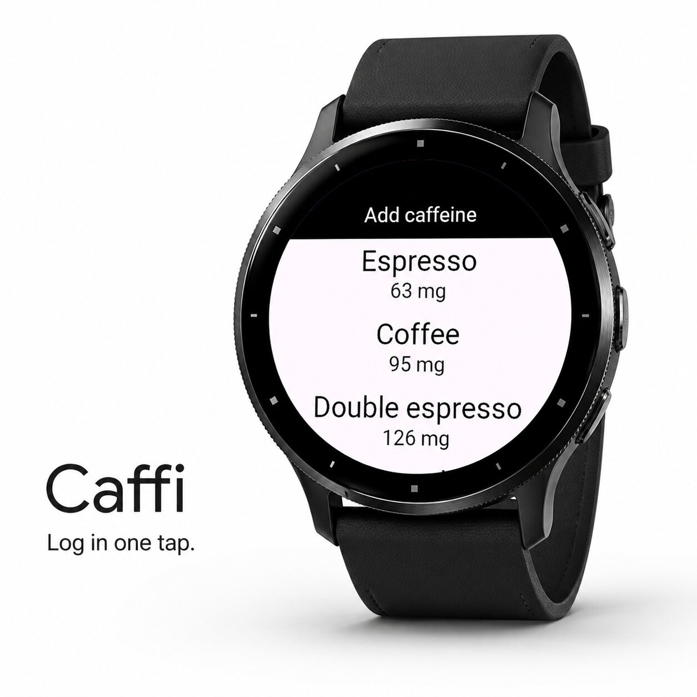
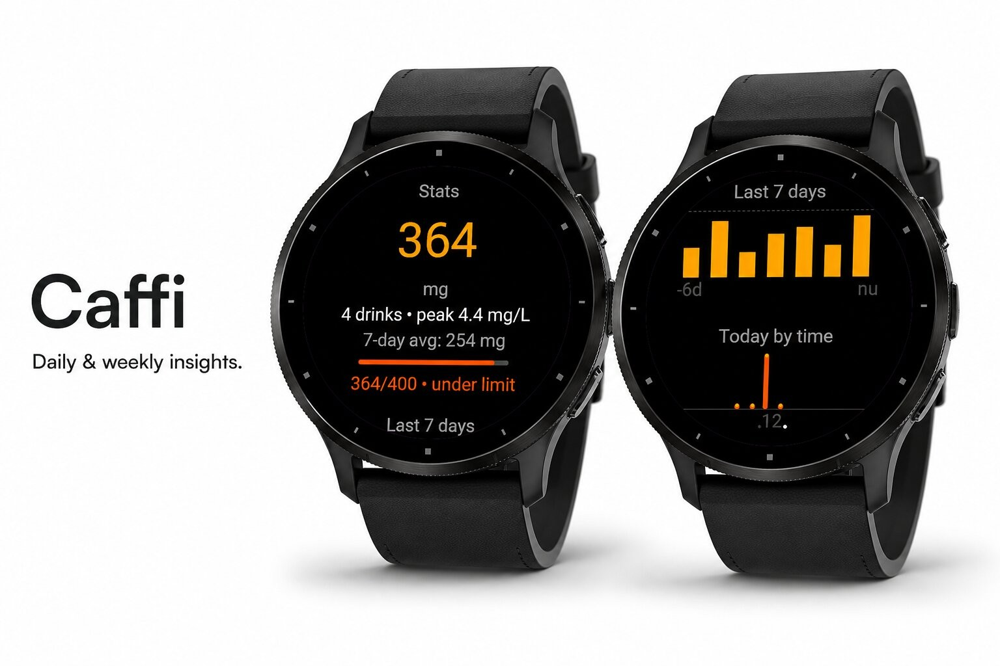

Health & habits · Device app
Caffeine curve that protects your sleep.





Caffi — Know your caffeine, protect your sleep.
Most caffeine apps just count down from your last cup. Caffi does it properly: it models the caffeine actually in your body with a real pharmacokinetic curve — both the absorption (the rise after you drink) and the elimination (the slow decay) — so the peak and the timing are realistic, not guessed.
At a glance you see how much caffeine is in your system right now, exactly when you'll be able to sleep again, and whether you're still under your daily limit. Perfect for protecting your sleep, timing a pre-workout boost, and keeping your intake in check.
Features
Make it yours
Set your body weight, caffeine half-life, sleep & stimulation thresholds, daily limit and bedtime — Caffi recalculates your personal curve instantly.
Drink smart. Sleep better. Caffi.